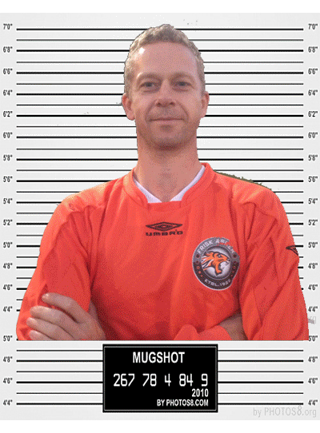

Episode 7: Avgjørelsen

Syvende og siste episode i FAOs forrykende sommerkrim
Avgjørelsen
«Her kommer de!»
Troppssjefen for beredskapstroppen sto og så ut av sprekken i
teltduken på partyteltet. Han sto med nattkikkert og kunne se
infrarøde konturer av tre personer inne i bygget.
«Flott», sa Brøyn.
Nå var endelig tiden kommet. På fersk gjerning! Her skulle det bli
solide represalier fra storsamfunnet, ja.
«Gjør dere klare», sa han og dro kikkerten ut av hendene på
troppssjefen.
Hele beredskapstroppen hadde reist seg, og rigget seg klare.
Brøyn satte nattkikkerten til øynene.
Han så bevegelser innerst i lokalet, så så han konturene av tre
personer.
«He he, rett i garnet. Rett i garnet. Med hele byttet.»
Han stirret i kikkerten.
Så skrudde han på linsen, først til venstre, så til høyre.
«Men i svarte…», mumlet han.
Troppssjefen hadde funnet frem en annen kikkert, og sto også og
stirret.
«Nå kommer den første av dem!», hvisket han.
«Vent», sa den eldste etterforskeren. «Inspektør Brøyn, han bærer
ikke på noe», sa han med trykk på hvert av ordene.
«Jeg ser det», sa Brøyn
Så kom det to skikkelser til.
«La oss sette i gang!» sa troppssjefen.
«Ikke før sjefen sier det!» sa etterforskeren, og la en arm på
skulderen til troppssjefen.
«Brøyn, ingen av dem bærer på noe», sa han.
Brøyn så bort på statsadvokaten.
Statsadvokaten satt også og så, og han holdt seg over munnen med
hånden.
Han så lenge på Brøyn med en oppgitt mine. Så viftet han med
hånden, bøyde hodet, og gned hånden i fjeset.
Brøyn så bort på troppssjefen.
Så stirret han bort på de tre skikkelsene som gikk ned
trappa.
«OK», sa han. «La dem gå.»
«Hva? Hva mener du? Vi kan ta dem nå!» sa troppssjefen.
«For hva?» freste Brøyn. «Hva har du tenkt å ta dem for? Å bryte
seg inn? De har ikke stjålet noe. Forstår du? De vil bli stilt opp
for en pinglete dommerjævel, som ikke vil blåse i fløyta i det hele
tatt, knapt gi dem tilsnakk, og så er de tilbake igjen i neste
kamp. Ikke faen.»
Brøyn lukket øynene.
Troppssjefen hevet stemmen. «Jeg nekter å ta imot den kjeften jeg
kommer til å få av sjefen min, for at du lar dem gå. Nå slipper de
jo unna!», sa han.
«Det er akkurat det de gjør, de slipper unna», sa Brøyn. «Dette er
min operasjon, jeg har den taktiske kommandoen,
som er en høyere rang enn din, og ja, de vil slippe unna,
og du vil la dem gjøre det.» Han slang kikkerten i bakken.
«Helvete!»
De tre skikkelsene ruslet over parkeringsplassen. Den ene satte
seg inn i en bil, startet opp, og kjørte av sted. Den andre låste
opp en sykkel, tok en slurk av vannflaska i flaskeholderen, og
syklet etter. Den tredje slentret samme vei, mens han sparket til
småstein her og der. Så var de borte.
Inspektør Brøyn dro teltduken til side og gikk ut av teltet.
Beredskapstroppen gikk også ut, og de sto der alle og så på
hverandre.
Inspektør Brøyn snudde seg sakte rundt.
Han sto åndsfraværende med den ødelagte kikkerten og slo den mot
låret.
Så svingte han kikkerten i en bue med armen og slang den over til
troppssjefen, som fanget den i hendene.
Brøyn sukket. «Tilbake til kontorpulten», sa han og gikk.
*
SMS-korrspondanse:
Kasserer Reodor: Det ser ut som at du kan legge inn
synderne i app'ene igjen.
Turbo:
OK. Det var jo hyggelig.
Kasserer Reodor: Jepp. Alle betalte med DnB Vipps på lørdag
kveld.
Turbo:
Utført! Alle er nå lagt til igjen.
Kasserer Reodor: Good. Litt merkelig egentlig. Alle
vipps-transaksjonene ble gjort innenfor det samme minuttet midt på
natta på lørdag.
Turbo:
Strange. Kanskje de hacka seg inn på DnBs vipps-server, he he
;-)
Kasserer Reodor: :-) Ikke utenkelig. For de har betalt
forskudd for de neste 10 årene også.
Turbo:
Fantastisk. Flotte karer.
*
Sunny satte seg ned på stolen med et fornøyd ansiktsuttrykk.
Festmiddagen var utsøkt.
Han var nettopp ferdig med talen, med velfortjent skryt av
spillerne for deres heltemodige innsats.
Han så utover bordet. Nederst ved enden satt Bønna, Mads og Moa,
og småkjeklet om ett eller annet. De hadde ikke hørt et ord av det
han hadde sagt. Ved siden av dem satt Trond-2 og tastet på
mobiltelefonen, han drev og meldte med en eller annen berte.
Bortenfor satt Happi og glippet med øya, med stinne kinn.
Forspist. Hadde forsynt seg 6 ganger.
Ved siden av ham satt Alex og sov.
Sunny smilte for seg selv, og reiste seg fra stolen igjen. Han
gikk bort til vinduet og så ut. Naboen hadde endelig pakket ned
partyteltet.
Han snudde seg og ble stående og se på banden sin.
Some bunch, tenkte han.
Han tok glasset sitt og tok en slurk. Happi hevet glasset sitt og
skålte med ham, før han satte det skeivt ned på bordet, så glasset
veltet.
Hvordan ville det vært, om han hadde hatt en ekte bande?
Hvordan ville det vært, om han hadde hatt ambisjoner?
Om han hadde satt seg mål?
Sunny så på dem der de satt.
Mads møtte blikket hans, smilte, og reiste glasset. De skålte.
Mads tok glasset på styrten.
Vel, det ville han aldri få vite.
Det er ikke mye til bande, okay, tenkte han.
Men det er min bande.
Og vi er de vi er.
Hverken mer eller mindre.
Det gjør det jo bare desto mer spennende på veien.
The End
Etterord:
På Frisk Asker Oldboys pleier vi ikke å ha etterord.
Vi bare rusler hjem, over parkeringsplassen.
Hvis noen skulle komme til å si noe, så sier de uansett
bare det samme som de også sa før kampen.
Så da kan vi heller like godt gjenta forordet:
Sunny's Seven er en historie basert på virkelige hendelser. Bare lagt inn i en action-kontekst. Enhver likhet med virkelige personer er tilsiktet og langt fra tilfeldig.
Rulletekst:
In order of apperance:
Etterforsker d.y…………………… Amir
Etterforsker d.e…………………… Kikki
Statsadvokaten…………… ……… Reodor
Sunny………………………........... Himself
Alex…………………………........... Himself
Moa……………………………….... Himself
Happi …………………………........ Himself
Frk Mona-Penny …………..……… Miss Moneypenny
Inspektør Brøyn …………………... Brøyn
Bønna ……………………….......... Himself
Trond-2 ……………………………. Trond
Mads ………………………………. Himself
Vekter ……………………..............
Brenito
Leder for beredskapstroppen….... Dag
Stuntmen …………………………. Hofsli
......................................................
ThomasD
......................................................
Megler'n
Manus …………….……………… Keegan
Takk til: …………………………..... DnB
......................................................
Oslo Statsadvokatembete
......................................................
Førsteklasse rekrutt v/ Politihøgskolen
......................................................
Securitas
......................................................
Asker Brannstasjon
......................................................
Asker & Bærum Renhold
......................................................
Beredskapstroppen
......................................................
Hansa bryggeri
......................................................
Nesbru kebab
